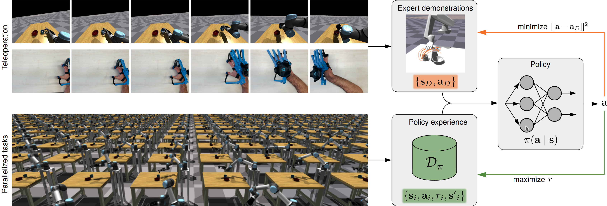

Abstract: Manipulation with anthropomorphic robot hands remains a challenging problem in robotics because of the high-dimensional state and action spaces and complex contacts. Nevertheless, skillful closed-loop manipulation is required to enable humanoid robots to operate in unstructured real-world environments. Reinforcement learning (RL) has traditionally imposed enormous interaction data requirements for optimizing such complex control problems. We introduce a new framework that leverages recent advances in GPU-based simulation along with the strength of imitation learning in guiding policy search towards promising behaviors to make RL training feasible in these domains. To this end, we present an immersive virtual reality teleoperation interface designed for interactive human-like manipulation on contact rich tasks and a suite of manipulation environments inspired by tasks of daily living. Finally, we demonstrate the complementary strengths of massively parallel RL and imitation learning, yielding robust and natural behaviors.
Virtual Reality Teleoperation
The video below shows the operator, the HMD-view and a static view on the scene to illustrate the tracking of the operator's head and hand movements in the simulation.
Learning Dexterous Manipulation
We utilize the complementary strengths of imitation learning and massively parallel RL by guiding PPO with the help of an imitation loss on the human demonstration dataset.

Trained Policies
Videos show policies trained with behavior cloning (BC), Proximal Policy Optimization (PPO) with dense and sparse rewards, and a combination of BC and PPO (DAPG), which incorperates both imitation and reinforcement learning objectives.